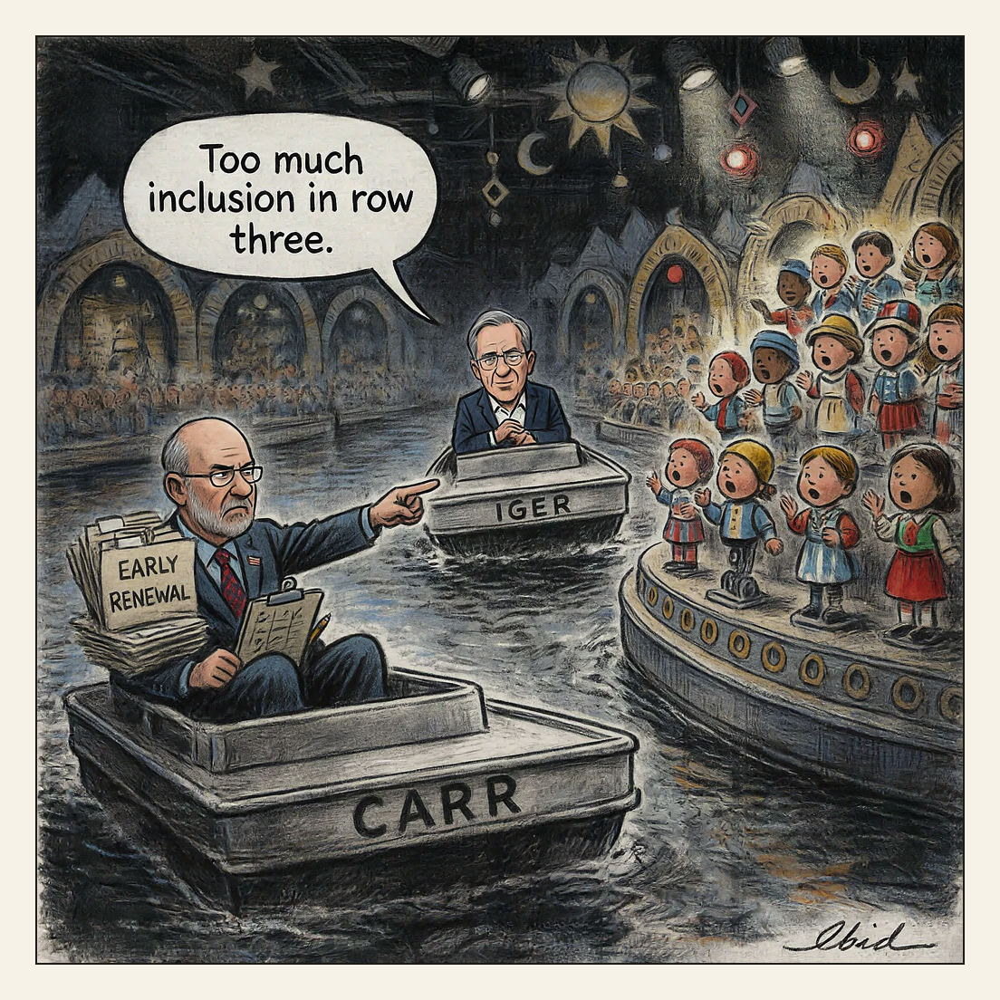

This is the easy way.
The Easy Way

ABC and parent Walt Disney Co. sued the FCC in federal court on Aug. 18, 2026, alleging retaliation against its news coverage and late-night satire. The FCC has forced all eight ABC/Disney-owned stations, six of them in the largest U.S. markets, into license renewal scrutiny years ahead of schedule; chair Brendan Carr says the reviews test whether broadcasters serve 'the public interest' and comply with Trump's executive order on diversity, equity and inclusion. Carr earlier told the companies they could 'do this the easy way or the hard way' as Trump demanded Jimmy Kimmel be pulled, and ABC paid $16 million in December 2024 to settle Trump's defamation suit.